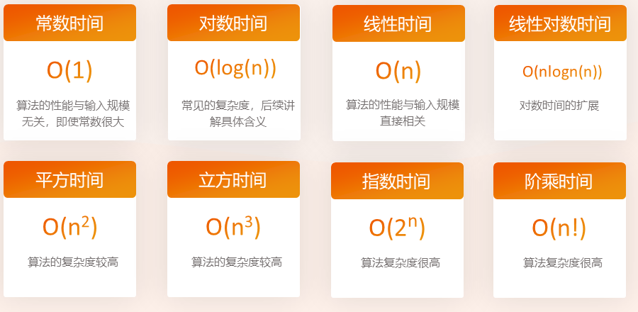
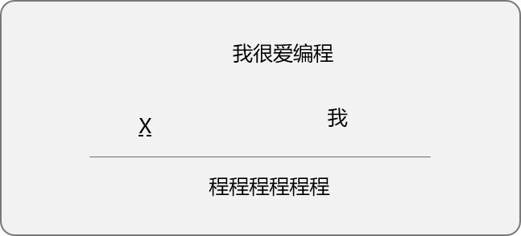
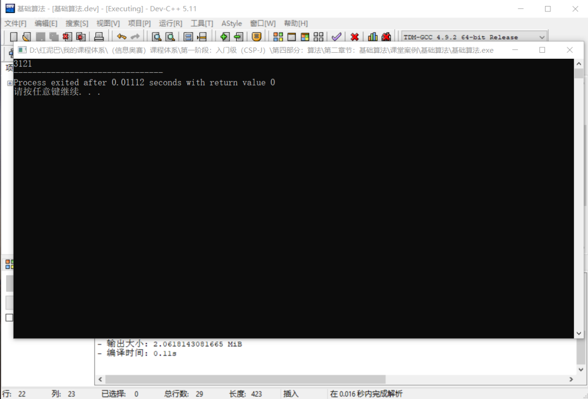

C++不知算法系列之集结基础算法思想
1. 前言
数据结构和算法是程序的 2 大基础结构，如果说数据是程序的汽油，算法则就是程序的发动机。
什么是数据结构？
指数据之间的逻辑关系以及在计算机中的存储方式，数据的存储方式会影响到获取数据的便利性。
现实生活中，如果把春夏秋冬的衣物全部堆放在一起，当需要某一季节的衣服时，寻找起来是困难的。如果分门别类、有条理地存放，则寻找起来会方便很多。同理，编写程序时，如果对程序所依赖的数据有条理、易于查找的方式进行存储，则在处理数据时，可以提升程序的整体性能。
数据结构准确说是一个空间管理概念，同样的数据使用不同的数据结构时，对程序会有空间度上的影响。
什么是算法？
算法是解决问题的思路或流程，算法与具体的计算机语言无关，但算法一定能通过计算机语言实现。
理解算法，可以从 2 个角度：
- 广义角度： 算法是指处理数据时，使用的解决思路。只要能达到数据处理目的，任一解决思路都可认为是算法，也就是说程序中无处不算法。
- 狭义角度： 对各种解决问题的经验和思路进行总结、归纳，形成算法体系或算法思想。
算法与数据结构的关系？
算法不应该仅针对于特定的数据结构，应该针对特定类型的问题。算法是思路，数据结构是算法实施对象。设计优秀的数据结构对算法的性能会有质的提升。
算法的特性：
- 有穷性：算法必须能在有限时间内完成。
- 确定性：对相同的输入必须得到相同的结果。
- 可行性：即算法应该可以通过具体的语言得以实现。
- 输入：一个算法可以有
0个或多个输入。 - 输出：算法必须有结果，也就是必须有一个或多个输出。
算法的描述：
- 自然语言。因受限于语言的岐义性，自然语言描述算法同样会出现如此问题。
- 流程图。使用标准的图形化语言描述，易于理解和交流。
- 使用计算机语言。算法的最终归缩。
算法性能分析：
可以使用时间复杂度和空间复杂度评价算法的性能高低。2 者均通过大O表示描述，大 O 时间复杂度实际上不具体表示真正的执行时间，而是表示代码执行时间随数据规模增长变化的趋势。所以也叫渐进时间复杂度，简称时间复杂度。
时间复杂度：指算法需要消耗的时间资源。使用大O法计算时间复杂度的原则：
- 只关注循环执行次数最多的一段代码，省去最高阶项前面的常量、低阶、系数。
- 如果运行时间是常数量级，则用常数
1表示。 - 加法法则：总复杂度等于量级最大的那段代码的复杂度。分析每一部分时间复杂度，取量级最大的作为整段代码复杂度。
- 乘法法则：嵌套代码复杂度等于嵌套内外代码复杂度的乘积。
常见时间复杂度：

空间复杂度：空间复杂度也称渐进空间复杂度，表示算法的存储空间与数据规模之间的增长关系，算法在运行过程中临时占用存储空间大小的量度。
常见的空间复杂度：
- 常量空间：当算法的存储空间大小固定，和输入规模没有直接的关系时，空间复杂度记作
O(1)。 - 线性空间：当算法分配的空间是一个线性的集合（如数组），并且集合大小和输入规模
n成正比时，空间复杂度记作O(n)。 - 二维空间：当算法分配的空间是一个二维数组集合，并且集合的长度和宽度都与输入规模
n成正比时，空间复杂度记作O(n^2) - 递归空间：计算机在执行递归程序时，会专门分配一块内存，用来存储“方法调用栈”执行递归操作所需要的内存空间和递归的深度成正比。如果递归的深度是
n，那么空间复杂度就是O(n)。纯粹的递归操作的空间复杂度也是线性的。
2. 常见算法思想
2.1 穷举算法思想
穷举算法也称为枚举算法或暴力破解法，是一种原始算法。
什么是原始算法?
要了解原始算法的概念，就需要理解计算机的思维模式。
计算机本质是一台无意识、无经验、无知识积累的冰冷机器，它仅有基本的运算能力和判断能力。当然它还有一个人类无法比拟的强项，运算速度非常快。
人类思维和计算机思维的区别
比如，请找出数列[1,2,3,4,5]中哪 2 个数字相加等于 5。人类思维是直观性学习思维，可以直接给出答案，计算机不行。
计算机采用的是基本运算加判断的方案。先把1和2相加然后判断，如果不是，继续 把1和 3相加再判断……
这种思维我们称为穷举思维或暴力思维。
#include <iostream>
using namespace std;
int main(int argc, char** argv) {
int nums[] = {1, 2, 3, 4, 5};
for(int i=0; i<5; i++) {
for(int j=0; j<5; j++) {
if (nums[i] != nums[j] && (nums[i] + nums[j] )== 5) {
cout<<nums[i]<<"+"<<nums[j]<<"="<<nums[i] + nums[j]<<endl;
}
}
}
return 0;
}
当数列中的数字很少的时候，人类的思维有优势，当数据量很大的时候，计算机虽然采用的是笨拙的穷举思维，但是，因处理速度快，反而要远远快于人类计算出来。
本质上讲，计算机是无思维的，或者说计算机只会穷举，所以说，算法的本质都是引导性的。
什么是引导性？
就是你问它，它摇头或点头，你根据它的点头或摇头，继续问，它继续点头或摇头，直到得到你想到的答案。
穷法算法的思想：在一个指定的数据范围之内，通过不停地判断直到查找到正确的答案。
现根据穷举算法的思路解决一个数学中常见的猜数字题目。
如下图，每一个中文汉字表示一个数字，请找出每一个汉字所对应的数字。

穷举流程：
- 确定数字范围： 如果要让整个表达式有意义，则
我和程字所对应的数字不能是0。所以我和程字的数字范围应该是1~9之间，其它的数字范围可以是0~9之间。 - 初始每一个汉字所对应的数字， 然后套用表达式进行计算，如果计算结果符合要求，则宣布查找到，否则，更改每一个汉字所对应的数字。
编写实现：
#include <iostream>
#include <cmath>
using namespace std;
int main(int argc, char** argv) {
// 为 我很爱编程 中的每一个汉字初始数字起始边界
int wo = 1;
int hen = 0;
int ai = 0;
int bian = 1;
int chen = 1;
int count = 0;
int result = 0;
int num1=0;
for (wo=1; wo<10; wo++ ) {
for (hen=0; hen<10; hen++ ) {
for (ai=0; ai<10; ai++ ) {
for (bian=1; bian<10; bian++ ) {
for (chen=1; chen<10; chen++ ) {
result = chen * pow(10, 5) + chen * pow(10, 4) + chen * pow(10, 3) + chen * pow(10, 2) + chen * pow(10, 1) + chen;
num1 = wo * pow(10, 4) + hen * pow(10, 3) + ai * pow(10, 2) + bian * pow(10, 1) + chen;
count += 1;
if (num1 * wo == result) {
cout<<wo<<hen<<ai<<bian<<chen<<endl;
cout<<count<<endl;
break;
}
}
}
}
}
}
return 0;
}
//输出结果：79635
上述代码为典型的穷举算法，代码中添加了一个计数器，用来统计最终计算多少次，仅为了观察。
穷举算法的结构有一个较大的特点，往往会出现循环语法结构层层嵌套。
在此基础上思考，是否存在优化方案，可以减少循环次数。
题目中还有一个隐式条件，我很爱编程中的每一个汉字所对应的数字不能相同。可以把这条件加入到上述代码中。
#include <iostream>
#include <cmath>
using namespace std;
int main(int argc, char** argv) {
// 为 我很爱编程 中的每一个汉字初始数字起始边界
int wo = 1;
int hen = 0;
int ai = 0;
int bian = 1;
int chen = 1;
int count = 0;
int result = 0;
int num1=0;
for (wo=1; wo<10; wo++ ) {
for (hen=0; hen<10; hen++ ) {
if (hen == wo)
continue;
for (ai=0; ai<10; ai++ ) {
if (ai == hen or ai == wo)
continue;
for (bian=1; bian<10; bian++ ) {
if (bian == ai or bian == hen or bian == wo)
continue;
for (chen=1; chen<10; chen++ ) {
if (chen == bian or chen == ai or chen == hen or chen == wo)
continue;
result = chen * pow(10, 5) + chen * pow(10, 4) + chen * pow(10, 3) + chen * pow(10, 2) + chen * pow(
10, 1) + chen;
num1 = wo * pow(10, 4) + hen * pow(10, 3) + ai * pow(10, 2) + bian * pow(10, 1) + chen;
count += 1;
if (num1 * wo == result) {
cout<<wo<<hen<<ai<<bian<<chen<<endl;
cout<<count<<endl;
break;
}
}
}
}
}
}
return 0;
}
从 2 次代码的运行结果可知，循环次数减少了 43763次。虽然减少了循环次数，因没有从本质上改变算法结构，所以说还是最原始的穷举算法思路。
2.2 试探算法
试探算法本质是穷举算法，试探表现在，问题中没有明确的求解范围，需要通过试探方式确定范围。
如下面的问题描述：
A、B、C、D、E五个人在某天夜里合伙去捕鱼，到第二天凌晨时都疲惫不堪，于是各自找地方睡觉。日上三杆，A第一个醒来，他将鱼分为五份，把多余的一条鱼扔掉，拿走自己的一份。B第二个醒来，也将鱼分为五份，把多余的一条鱼扔掉，保持走自己的一份。C、D、E依次醒来，也按同样的方法拿走鱼。问他们合伙至少捕了多少条鱼？
问题分析：
- 假设一共捕获了
n条鱼。除了可以确定n一定是正整数外， 其范围是不知的。但是，根据问题描述可知n-1是5的倍数。这是本题的基础过滤条件。 A拿走鱼后，B所看到的鱼的数量应该是n=(n-1)-(n-1)/5。 更新n后，n-1的值同样是5的倍数。- 如此一至到
E，n的值还是满足n-1是5的倍数。也就是一个数字经过5次分割时，减一后都是5的倍数。 - 可以根据知识思维，判断出
n最小值是6。穷举时，从6开始一至向上查找，向上的界限是多少，这里就需要试探。
#include <iostream>
using namespace std;
int main(int argc, char** argv) {
//初始试探的上限为 1000
int upNum=1000;
//是否继续试探
bool isCon=true;
while(isCon) {
//试探的下限从 6 开始
for (int i=6; i<upNum; i++) {
int n=i;
int j=0;
//检查 n 是否经过 5 次分割后数字还是满足要求
for(; j<5; j++) {
if ( (n-1) % 5==0 ) {
//分
n= (n-1) - (n-1) / 5;
} else {
break;
}
}
if(j==5) {
// n 中的数字满足问题描述
cout<<i;
//不需要再继续试探
isCon=false;
break;
}
}
//试探的步长值为 1000
upNum+=1000;
}
return 0;
}
输出结果：

会不会出现无限试探，如果出现这个问题只有 2 种可能：
- 算法设计有问题。
- 问题描述本身无解。
2.3 递推算法思想
计算机的思维本质是穷举。但是，人的思维是知识性、探索性思维，可以在解决问题时，发现问题中的规律，并通过计算机语言告诉计算机，这样可以在计算时绕过一些不必要的计算。
研究算法的本质就是通过发现数据间的规律、减少穷举的次数。
什么是递推算法？
简单讲，不断地利用已知信息推导出最终结果。显然，已知信息和最终结果数据之间一定要存在某些内在联系或规律。
递推算法又分为顺推法和逆推法。
- 顺推法：从已知条件出发，逐步推算出所需要的结果。
- 逆推法：从已知的结果出发，用迭代式逐步推算出问题开始，逆推法的本质就是逆向思维。
如下通过案例分别介绍顺推法和逆推法。
2.3.1 顺推算法
问题描述：斐波拉契数列
数列[1,1,2,3,5,8,13,21,34,55,……]就是一个符合斐波拉契关系的数列。
斐波拉契数列特点：
- 数列中的第
1、2位置的数字是1，这是已知信息。 - 从第
3个位置开始，其值为前面2个数字相加的结果。 知道了第3个位置的值，也将知道第4个位值，依此类推，可以求解出任何位置的数字。
#include <iostream>
using namespace std;
int main(int argc, char** argv) {
int num1 = 1;
int num2 = 1;
int num3=0;
for (int i=0; i<12; i++) {
// 推导出第 3 个位置的数字
num3 = num1 + num2;
cout<<num3<<"\t";
// 为计算后续数据做准备
num1 = num2;
num2 = num3;
}
return 0;
}
求解斐波拉契数列的方案就是典型的顺推思维。
如有数列[1,4,10,22,46……]，分析数列中前面几个数字的规律，输出数列的前 20 个数字。分析后可发现第 1 个位置的数字 1是已知信息，从第 2 个位置开始，其值和前一个值符合2*x+2的线性规律，所以也可以递推算法求解。
2.3.2 逆推算法
下面通几个案例讲解逆推算法的基本思想。
猴子吃桃问题：
有一只猴子，第 1 天摘了若干桃子，吃了桃子的一半后又吃了一个，第 2 天也是吃了桃子一半后再吃了一个……如此类推，到第 10 天时，还剩余 1 只桃子。请问猴子第 1 天摘了多少只桃子。
分析：
- 可以使用
逆推算法，也就是我们经常讲的逆向思维解决猴子吃桃问题。 - 第
10天还剩余1只桃子，可以看成是已知信息，已知信息属于结果信息。 - 求解第
1天的桃子总量，需求解的是开始问题。
找出数据之间的关系：
- 第
10有1个桃子，第10天的这1个桃子是取第9天桃子的一半减一个剩余的。 - 前一天的桃子除以
2减1等于后1天的桃子，或者说，前1天的桃子等于（后1天的桃子加1）乘以2。
有了数列之间的关系，编码就很容易了。
#include <iostream>
using namespace std;
int main(int argc, char** argv) {
// 第 10 天的桃子数，也是已知条件
int num = 1;
for(int i=0; i<9; i++) {
// 向第 1 天推进
num = (num + 1) * 2;
}
cout<<num;
return 0;
}
类似的问题还有很多：如猜年龄问题。
有 5 个小孩子，问第 1 个小孩子的年龄是多少？他说他是第 2 个小孩子的年龄加 2 岁。
问第 2 个小孩子的年龄时，他说他是第3个小孩子的年龄加2岁。
问第3个小孩子的年龄时，他说他是第 4个小孩子年龄加2 岁。
问第 4 个小孩子年龄时，他说他是第 5 个小孩子的年龄加2 岁。
问第 5个小孩子的年龄时，他说他的年龄是6岁，求解每一个小孩子的年龄。
这个问题也是典型的逆推问题。第 5 个小孩子的年龄是已知的，而且知道与前一个小孩子年龄的关系前一个小孩子的年龄=后一个小孩子年龄+2。满足数学上的线性函数关系。
一层层回推就能计算出第 1 个小孩子的年龄是：14岁。
#include <iostream>
using namespace std;
int main(int argc, char** argv) {
int age = 6;
for(int i=4;i>0;i--){
age = age + 2;
}
cout<<age;
return 0;
}
上述问题虽然简单，但能很好地描述递推算法的思想。
2.4 递归算法
具体解决问题时，总是一种算法借鉴另一种算法，或一个算法中融入另一种算法。算法之间互相交织、迭代而诞生出新的算法。
前文所说，穷举才是计算机的本质，其它算法无非是通过分析问题、发现规律、减少算法的实施过程中的次数。
什么是递归算法？
通过不停调用函数本身从而达到解决问题的目地。
现实生活中经常会遇到的问题，我要找到小王的电话号码，可以帮助理解递归过程。
想知道朋友小王的电话号码，先找到朋友小李，小李说他也没有，但是他会帮问问小张,小张说他也没有，他会问问小胡，小胡说他知道。
这里面包括 2 条线。
- 递进线：
我-（问）->小李-(问)->小张-（问）->小胡(结果)。 - 回溯线：小胡-(结果)->小张-(结果)->小李-(结果)->我。
递归算法的特点：
- 通过
递进线寻求帮助。递推线的最终必须有能得到帮助的时候（如最后小胡知道小王的电话号码），否则会成为死结。表现在编码实施过程中需要有调用终止的时候。 - 通过
回溯线求解出原始问题。
前面的斐波拉契数列也可以使用递归算法解决。比如说，想知道在第 12 位置的数字是多少。
- 递进线：求数列第
12位置的值，求助于第11位置的值，然后再求助于第10的值， 一至求助到第1,2位置。 - 回溯线：通过回溯求解出原始问题。
#include <iostream>
using namespace std;
int fb (int pos) {
if (pos == 1 || pos == 2)
// 求助的终点
return 1;
// 求助
return fb(pos - 1) + fb(pos - 2);
}
int main(int argc, char** argv) {
int res = fb(12);
cout<<res;
return 0;
}
求解年龄的问题也可以使用递归算法实现。
递归算法可以用于 2 类问题的求解：
- 替代循环语法结构。一个函数就是一个逻辑实现的封装，反复调用自己，则可认为重复执行相同逻辑。
递归比循环的性能低下。能使用循坏解决的问题就不要使用递归。
- 一个看似复杂的问题，其实最终答案归结到一个小问题上，如求阶乘、斐波拉契之类的问题。
递归更多应用于此类型问题的求解。
斐波拉契和求年龄的问题即可以使用前文的递推算法思想实现，也可以使用递归算法实现。说明：
-
解决一个问题不能拘泥一种方案。
-
算法与算法之间会有重叠、借鉴、融合之处。
任何语言都提供有递归调用方式。可以利用递归的特点对数据进行处理。
递归的底层依赖于栈数据结构，递归的具体细节本文不做太多讲解，本文意在概括常见算法。
在算法理论中，回溯本身就是一种算法方案，可独立解决很多实际问题。
回溯法是计算机解题中常用的算法，很多问题无法根据某种确定的计算法则来求解，但可以利用回溯的技术求解。回溯法是搜索算法中的一种控制策略。
它的基本思想是：
从问题的某一种状态（一般是默认的初始状态）出发，搜索从这种状态出发所能达到的所有“状态”，当一条路走到“尽头”的时候，先退几步，接着从另一种可能的“状态”出发，继续搜索，直到所有的“路径”都尝试过。
回溯思路在我们在现实生活中无处不在，对此体现的较具体的就是下棋，还有一个典型的应用就是走迷宫。
因回溯已经内置在递归算法中，一般需要使用回溯解决的问题，都会用到递归。
2.5 分治思想
将一个计算复杂的问题分为若干子问题来进行求解，然后合并各个小问题得到原始问题的最终求解。
分治算法的特点：
- 原始问题和分解出来的子问题的问题形式相同，只是数据规模不相同，也就是说无论是原始问题，还是分解后的子问题，都在解决同一个问题。
- 分解出来的子问题具有完全独立性，子问题是原始问题的缩影。
- 使用分治算法时，不一定都需要合并子问题。如二分搜索算法，是分治算法的实现，但不需要合归。
分治算法实时有 2 个过程：
- 分治：原始问题能分解成若干较小的相同问题，子问题因规模较小，更容易求解到答案。
- 合并：合并子问题得到原始问题的求解。
因子问题与原始问题相同，一般会使用递归算法多次迭代。
如二分查找以及快速排序，都是分治的思想的应用。
二分的迭代实现：
#include <iostream>
using namespace std;
//二分查找算法
int binary_find(int nums[],int key) {
// 初始左指针
int l_idx = 0;
// 初始在指针
int r_ldx = sizeof(nums)/4 - 1;
while (l_idx <= r_ldx) {
// 计算出中间位置
int mid_pos = (r_ldx + l_idx) ; // 2
// 计算中间位置的值
int mid_val = nums[mid_pos];
// 与关键字比较
if (mid_val == key)
// 出口一：比较相等，有此关键字，返回关键字所在位置
return mid_pos;
else if (mid_val > key)
// 说明查找范围应该缩少在原数的左边
r_ldx = mid_pos - 1;
else
l_idx = mid_pos + 1;
}
// 出口二：没有查找到给定关键字
return -1;
}
int main(int argc, char** argv) {
int nums[7] = {1, 3, 4, 5, 8, 10, 12};
int key = 3;
int pos = binary_find(nums, key);
cout<<pos;
return 0;
}
二分查找的递归实现：
#include <iostream>
using namespace std;
//递归实现二分查找
int binary_find_dg(int nums[],int key,int l_idx,int r_ldx) {
if (l_idx > r_ldx)
// 出口一：没有查找到给定关键字
return -1;
// 计算出中间位置
int mid_pos = (r_ldx + l_idx) ;// 2
// 计算中间位置的值
int mid_val = nums[mid_pos];
// 与关键字比较
if (mid_val == key)
// 出口二：比较相等，有此关键字，返回关键字所在位置
return mid_pos;
else if (mid_val > key)
// 说明查找范围应该缩少在原数的左边
r_ldx = mid_pos - 1;
else
l_idx = mid_pos + 1;
return binary_find_dg(nums, key, l_idx, r_ldx);
}
int main(int argc, char** argv) {
int nums[] = {1, 3, 4, 5, 8, 10, 12};
int key = 8;
int pos = binary_find_dg(nums, key,0,6);
cout<<pos;
return 0;
}
本文意在总结算法，快速排序的代码就不上了。
2.6 贪心算法思想
贪心算法总是做出在当前看来最好的选择，并从不整体最优考虑，只是局部最优秀。虽然贪心算法总是从局部最优求解，但有时也有可能让最终求解也是最优的。
贪心算法的特点：
- 不能保证最后的解是最优的。
- 不能用来求最大或最小解问题。
- 只能求满足某些约束条件的可行解。
贪婪算法最典型的案例：找零钱。
问题描述：在超市购物时，收银员找零钱时，如何使找回零钱的纸币数最少。
贪心算法的思路是从最大面值的币种开始，按递减的顺序考虑各种币种。也就是先尽量用大面值的币种，当不足大面值币种的金额时才去考虑下一种较小面值的币种。
这里的贪心表现在最大可能使用最大金额的币种。显然，贪心算法在此问题上是可行的。
编码实现：
假设人民币有 100、50、20、10、5、2、1、0.5、0.1几种面额，且数量无限，找零钱时，请尽量实现找给顾客的零钱所用到的币种的总数量最少。
#include <iostream>
#include <map>
using namespace std;
int main(int argc, char** argv) {
// 币种
double bi_zhongs[] = {100, 50, 20, 10, 5, 2, 1, 0.5, 0.2, 0.1};
// 记录最终结果
map<double ,int> resMap;
int count=0;
//需要找的零钱
double lq_ = 68.9;
// 为了便于计算，扩大100倍
int lq = lq_ * 10;
for(int i=0; i<10; i++ ) {
if (lq >= int( bi_zhongs[i] * 10 )) {
// 计算张数
count = lq / (bi_zhongs[i] * 10);
resMap[bi_zhongs[i]] = int(count);
// 余额
lq = lq % (int( bi_zhongs[i] * 10));
}
if (lq == 0)
break;
}
// 输出每一种币种的数量
map<double ,int>::iterator begin= resMap.begin();
map<double ,int>::iterator end= resMap.end();
while(begin!=end) {
cout<<begin->first<<":"<<begin->second<<"\t";
begin++;
}
return 0;
}
//输出结果：
//{50: 1, 10: 1, 5: 1, 2: 1, 1: 1, 0.5: 1, 0.2: 2}
3. 总结
本文介绍了常见的几种基础算法 ，除些之外，还有更多算法思想。如动态规划、摸拟思想……限于篇幅原因，本文中即不一一罗列，也不深研算法内在细节。
后续会为某些经典算法单独开文，详细介绍其算法的微妙之处。万变不离其宗，研究算法时即要做到能对各种算法独立分析，又要做到融合贯通。